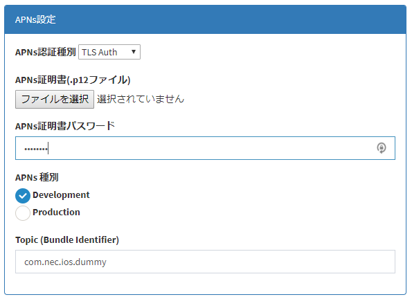

3.3.2. モバイルバックエンド基盤サーバへの APNs 証明書の設定¶
アプリケーションの作成¶
APNs 証明書が作成できたら、モバイルバックエンド基盤サーバに証明書を登録します。
デベロッパコンソールにログインし、アプリケーションを作成してください。
モバイルバックエンド基盤上では、証明書ごとにアプリケーションをセットアップする必要があります。 実質的に同一のアプリであっても、サーバ上では本番用と開発用では異なるアプリとして登録する必要があります。
証明書の登録¶
デベロッパコンソールのアプリケーションの編集画面に移動してください。
APNs の認証種別に "TLS Auth" を指定してください。
APNs 証明書の登録フィールドが表示されますので、ここで APNs 証明書ファイル (.p12ファイル) を指定してアップロードしてください。この際、証明書のパスワードも指定する必要があります。
また、種別には Development と Production の２種類がありますので、 種別も選択してください。
Topic には、アプリケーションの Bundle Identifier の値を入力してください。
注意
VoIP Push を行う場合は、Bundle Identifier の末尾に ".voip" を追加する必要があります。 また、証明書は VoIP Push 用の証明書を使用する必要があります。
また、クライアントからの Push 送信を許可する場合、「クライアントPush送信許可」 にチェックを入れる必要があります。